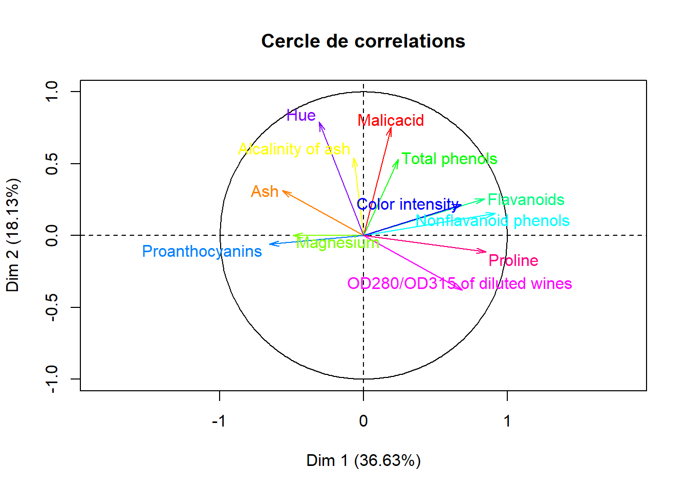

data<-read.table("files/wine.txt", sep=",")
data<-data[1:13]
colnames(data)<-c("Alcohol","Malicacid","Ash","Alcalinity of ash","Magnesium","Total phenols","Flavanoids","Nonflavanoid phenols ","Proanthocyanins ","Color intensity","Hue","OD280/OD315 of diluted wines ","Proline ")
# Pretraitement :
data$Alcohol[which(data$Alcohol=="1")]<-"alcohol 1"
data$Alcohol[which(data$Alcohol=="2")]<-"alcohol 2"
data$Alcohol[which(data$Alcohol=="3")]<-"alcohol 3"
# Descriptive statistics :
summary(data)## Alcohol Malicacid Ash Alcalinity of ash
## Length:178 Min. :11.03 Min. :0.740 Min. :1.360
## Class :character 1st Qu.:12.36 1st Qu.:1.603 1st Qu.:2.210
## Mode :character Median :13.05 Median :1.865 Median :2.360
## Mean :13.00 Mean :2.336 Mean :2.367
## 3rd Qu.:13.68 3rd Qu.:3.083 3rd Qu.:2.558
## Max. :14.83 Max. :5.800 Max. :3.230
## Magnesium Total phenols Flavanoids Nonflavanoid phenols
## Min. :10.60 Min. : 70.00 Min. :0.980 Min. :0.340
## 1st Qu.:17.20 1st Qu.: 88.00 1st Qu.:1.742 1st Qu.:1.205
## Median :19.50 Median : 98.00 Median :2.355 Median :2.135
## Mean :19.49 Mean : 99.74 Mean :2.295 Mean :2.029
## 3rd Qu.:21.50 3rd Qu.:107.00 3rd Qu.:2.800 3rd Qu.:2.875
## Max. :30.00 Max. :162.00 Max. :3.880 Max. :5.080
## Proanthocyanins Color intensity Hue
## Min. :0.1300 Min. :0.410 Min. : 1.280
## 1st Qu.:0.2700 1st Qu.:1.250 1st Qu.: 3.220
## Median :0.3400 Median :1.555 Median : 4.690
## Mean :0.3619 Mean :1.591 Mean : 5.058
## 3rd Qu.:0.4375 3rd Qu.:1.950 3rd Qu.: 6.200
## Max. :0.6600 Max. :3.580 Max. :13.000
## OD280/OD315 of diluted wines Proline
## Min. :0.4800 Min. :1.270
## 1st Qu.:0.7825 1st Qu.:1.938
## Median :0.9650 Median :2.780
## Mean :0.9574 Mean :2.612
## 3rd Qu.:1.1200 3rd Qu.:3.170
## Max. :1.7100 Max. :4.000str(data)## 'data.frame': 178 obs. of 13 variables:
## $ Alcohol : chr "alcohol 1" "alcohol 1" "alcohol 1" "alcohol 1" ...
## $ Malicacid : num 14.2 13.2 13.2 14.4 13.2 ...
## $ Ash : num 1.71 1.78 2.36 1.95 2.59 1.76 1.87 2.15 1.64 1.35 ...
## $ Alcalinity of ash : num 2.43 2.14 2.67 2.5 2.87 2.45 2.45 2.61 2.17 2.27 ...
## $ Magnesium : num 15.6 11.2 18.6 16.8 21 15.2 14.6 17.6 14 16 ...
## $ Total phenols : int 127 100 101 113 118 112 96 121 97 98 ...
## $ Flavanoids : num 2.8 2.65 2.8 3.85 2.8 3.27 2.5 2.6 2.8 2.98 ...
## $ Nonflavanoid phenols : num 3.06 2.76 3.24 3.49 2.69 3.39 2.52 2.51 2.98 3.15 ...
## $ Proanthocyanins : num 0.28 0.26 0.3 0.24 0.39 0.34 0.3 0.31 0.29 0.22 ...
## $ Color intensity : num 2.29 1.28 2.81 2.18 1.82 1.97 1.98 1.25 1.98 1.85 ...
## $ Hue : num 5.64 4.38 5.68 7.8 4.32 6.75 5.25 5.05 5.2 7.22 ...
## $ OD280/OD315 of diluted wines : num 1.04 1.05 1.03 0.86 1.04 1.05 1.02 1.06 1.08 1.01 ...
## $ Proline : num 3.92 3.4 3.17 3.45 2.93 2.85 3.58 3.58 2.85 3.55 ...p <- ggplot(data, aes(factor(data$Alcohol), data$Magnesium))
p + geom_boxplot(fill=rainbow(3))+ theme(legend.position="none") acp<-PCA(data[,2:13],ncp=11,scale.unit=TRUE,graph = FALSE)
####cercle de correlation
plot.PCA(acp,axes = c(1,2),choix = "var",title = "Cercle de correlations",col.hab = rainbow(12),col.quali = "cyan")
###Screeplot
fviz_screeplot(acp,choice="eigenvalue")fviz_pca_biplot(acp)###Repr?sentation des variables par cos2
fviz_cos2(acp, choice = "var",axes = c(1))fviz_cos2(acp, choice = "var",axes = c(2))fviz_cos2(acp, choice = "var",axes = c(3))###Repr?sentation des variables par contribution
fviz_contrib(acp, choice = "var",axes = c(1))fviz_contrib(acp, choice = "var",axes = c(2))fviz_contrib(acp, choice = "var",axes = c(3))